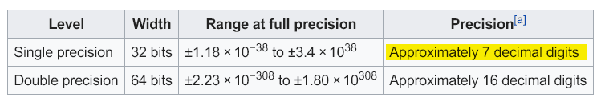

浮点数的有效精度

由图可知, float32的 decimals 是7,float64的 decimals 是16
具体的含义就是整数部分加小数部分能保证的精度范围是 7(单精度) 或者 16(双精度), 超过这个范围 就会失去精度
带来的坑
涉及到大金额资金操作的时候,如果数据库存放的是decimal类型,并且操作精度超过了双精度浮点数的精度,那么就会出现问题
我们以mysql的decimal的数据类型举例
首先准备一个表
1 | CREATE TABLE `fund` ( |
然后插入一条数据
1 | INSERT INTO `fund`(`id`, `amount`) VALUES (1, 0.1234560) |
那么我们来写一条更新语句
1 | UPDATE `fund` SET amount = amount + "1000000000.0000001" WHERE id = 1 |
查询后得到结果,刚好只精确了到了decimal 16
1 | 1000000000.1234561 |
很显然,这个结果不准确,实际应该得到的结果是
1 | 1000000000.1234561 |
解决方案
因为mysql内部对字符串做了类型转换,所以解决方案就是修改字符串的类型:
1 | UPDATE `fund` SET amount = amount + CAST("1000000000.0000001" AS DECIMAL ( 20, 7 )) WHERE id = 1 |
mysql文档: MySQL :: MySQL 5.7 Reference Manual :: 12.3 Type Conversion in Expression Evaluation